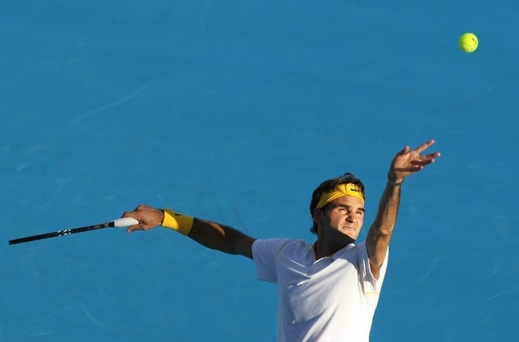
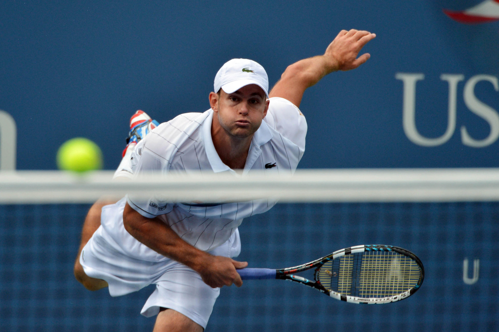

Del "Chip-and-Charge" al poder puro: el saque de ayer y hoy
En el mundo del tenis, donde cada punto es una batalla de estrategia y resistencia, hay un golpe que se ha transformado de un simple inicio de juego a un arma letal: el saque. Si bien el saque siempre ha sido fundamental, su papel en el tenis moderno ha evolucionado drásticamente, convirtiéndose en un factor decisivo que puede inclinar la balanza de cualquier partido.
Para entender la magnitud del saque actual, es útil mirar hacia el pasado. En las décadas de los 70 y 80, con raquetas de madera y cuerdas de tripa, el saque era un golpe más táctico que de fuerza. Jugadores como John McEnroe o Ivan Lendl lo utilizaban para abrir la cancha y seguir con una volea. El famoso "chip-and-charge" (devolver el saque con un golpe cortado y subir a la red) era una estrategia común.
Sin embargo, con la llegada de las raquetas de grafito y la mejora en las tecnologías de las cuerdas, la potencia en el saque se disparó. La velocidad y el peso de la pelota se incrementaron exponencialmente, lo que hizo que la estrategia de subir a la red se volviera mucho más arriesgada. De repente, el saque se convirtió en un golpe de puro poder, diseñado para generar un golpe ganador o, al menos, un retorno débil.
Maestros del servicio: grandes sacadores de la historia
A lo largo de los años, ha habido jugadores que han elevado el saque a una forma de arte. Pete Sampras, conocido como "Pistol Pete", es un ícono. Su saque era una máquina de precisión y potencia, capaz de desequilibrar a cualquier oponente, especialmente en puntos de presión. Luego está Andy Roddick, quien durante mucho tiempo ostentó el récord del saque más rápido. Su velocidad supersónica ponía a sus rivales constantemente a la defensiva.
En el tenis más reciente, jugadores como John Isner han llevado el saque a un nivel extremo. Con su imponente altura, Isner utiliza su servicio como su principal arma, creando partidos interminables donde los juegos de servicio rara vez se rompen. Y por supuesto, Nick Kyrgios, cuyo saque es tan potente y variado como su personalidad, capaz de desconcertar a cualquiera con su mezcla de velocidad y efectos impredecibles.
Más allá de la velocidad: los aspectos técnicos que importan
Un gran saque no se trata solo de pegarle lo más fuerte posible. La velocidad es importante, sí, pero la colocación y los efectos son lo que realmente lo convierten en un arma letal. Un saque de 200 km/h al cuerpo del oponente puede ser más efectivo que uno de 220 km/h al centro de la cancha. La capacidad de colocar la pelota en las esquinas, al cuerpo, o con efecto "slice" o "kick" es lo que separa a un buen sacador de un gran sacador. El "slice" hace que la pelota se deslice al salir de la cancha, mientras que el "kick" hace que bote alto, lo que es muy difícil de devolver.
¿Cómo entrenar un saque más eficiente?
Para cualquier tenista que busque mejorar, el saque debe ser una prioridad. La técnica es clave: un buen lanzamiento de pelota, una flexión de piernas adecuada para generar potencia desde el suelo y una rotación del torso fluida. Es crucial entrenar la consistencia y la precisión antes de obsesionarse con la velocidad. Practicar saques al cuerpo, a las T y a las esquinas con efectos variados es mucho más productivo que simplemente golpear la pelota con toda la fuerza.
¿Se ha vuelto el tenis demasiado dependiente del saque?
Esta es una pregunta que a menudo se debate. Los críticos argumentan que los partidos en canchas rápidas se han vuelto predecibles, con largos peloteos que no se inician hasta el tie-break. Es cierto que el dominio del saque ha reducido los intercambios largos, especialmente en los torneos de Grand Slam donde el ritmo es diferente. Sin embargo, el contraargumento es que la defensa de los retornos ha evolucionado en paralelo. Hoy en día, jugadores como Novak Djokovic y Daniil Medvedev son maestros en la devolución de saques, lo que los convierte en una verdadera pesadilla para cualquier sacador.
Reflexión final
El saque ha recorrido un largo camino. De ser un simple medio para poner la pelota en juego, se ha convertido en una pieza central de la estrategia moderna del tenis. Es un golpe que exige tanto fuerza como precisión, una herramienta que puede ganar un partido en un abrir y cerrar de ojos. No es solo un golpe, es la declaración de intenciones de un jugador en cada punto. Y en el tenis moderno, es el golpe que más ha evolucionado, demostrando que la innovación y el poder pueden coexistir en la cancha. El saque ya no es un simple comienzo, es el comienzo del final.